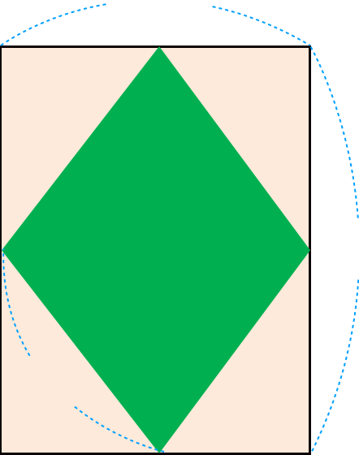

- 문제 1
- 문제 2
- 문제 3
- 문제 4
- 문제 5
-
안에 알맞은 수를 써넣어 직사각형의 둘레를 구해 보시오.
8 ㎝ 5 ㎝ (＋8)×2＝5(㎝)26 -
직사각형의 둘레가 30 ㎝일 때 세로는 몇 ㎝인지 구하시오.
 ㎝ 12 ㎝3
㎝ 12 ㎝3 -
주어진 도형의 둘레를 구하시오.
-
(1)
 4 ㎝
7 ㎝
㎝22
4 ㎝
7 ㎝
㎝22 -
(2)
 6 ㎝
㎝24
6 ㎝
㎝24
-
-
직사각형 모양의 운동장 안에 마름모 모양의 풀밭이 있습니다. 운동장의 둘레는 풀밭의 둘레보다 얼마나 깁니까?
 10 m 12 m 16 m m16 -
두 도형의 둘레를 비교해 보시오.
5 ㎝ 8 ㎝ 6 ㎝ 7 ㎝ 두 도형의 둘레는 26 ㎝로 같습니다.